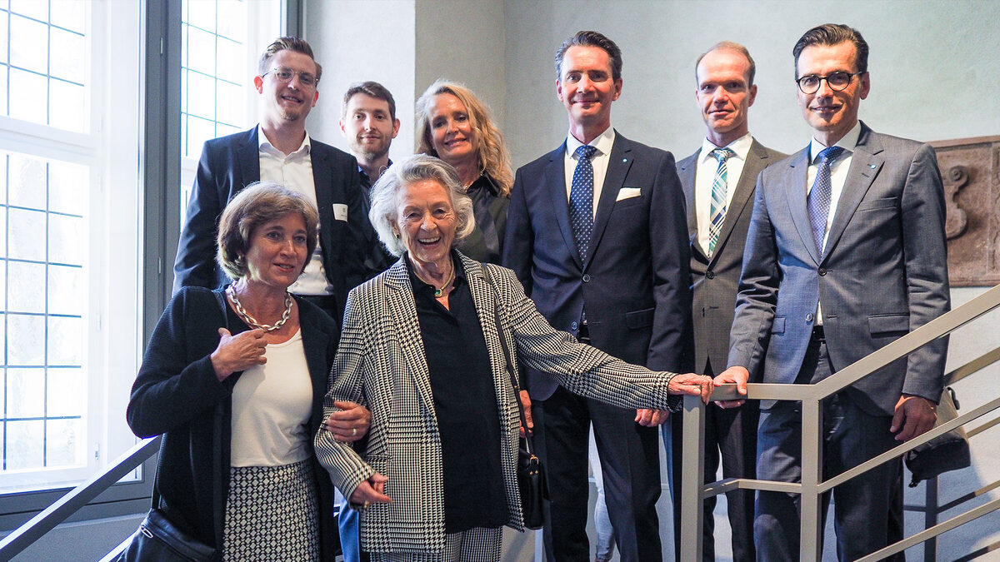
Our milestones
Brasseler was founded on January 1st, 1923. At a time of great historical and economic uncertainty, Peter Brasseler Sr. showed remarkable courage. His guiding principle, “Times can never be so bad that you can’t overcome them through better performance,” has proven true over more than 100 years of company history and continues to serve as an enduring motto.
Today, his life’s work stands as the result of many wise decisions, hard work, and above all: the dedication of our employees. Together, we have achieved a great deal over the past century. We look back on numerous milestones that have shaped our history and steadily transformed the company into what it is today.
We invite you to join us on our journey from the very beginning in 1923 to the present day. We look back with pride and joy on a century during which we have constantly grown through many challenges – 100 years of preparation for tomorrow.
Company foundation
It was with courage and foresight that the instrument manufacturer Peter Brasseler founded the dental bur factory "Gebr. Brasseler" in Düsseldorf on January 1st, 1923, thus laying the foundation for an extraordinary success story in a politically and economically difficult time. Under the brand name Komet, Peter Brasseler supplied his customers directly, without detours via dental depots. His strong personality, his high esteem for values and his intuitive feel for the market shaped the decades of his leadership - and our company culture to this day.
A new start in Lemgo
The first company building in Düsseldorf was destroyed in WWII. True to his conviction "Circumstances can never be so bad that they cannot be overcome by an even better performance", Peter Brasseler decided to take a chance on a new beginning in Lemgo, where Gebr. Brasseler found a new home and successfully established itself on the market. For 80 years, our instruments have found their way "From Lemgo to the rest of the world".
Vocational training
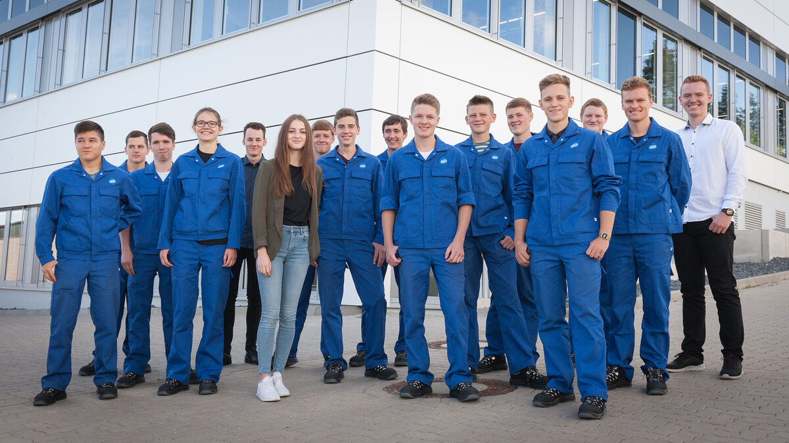
On April 1st, 1944, L. Wolff was the first apprentice to start training as a mechanic at our company. Peter Brasseler's goal of training young people to become skilled workers was and still is an important component of the company's strategy. So far, around 700 trainees and apprentices have completed their vocational training here at Gebr. Brasseler. Most of them remained with the company after qualifying, and many former trainees and apprentices have taken on senior positions up to and including general manager.
Tungsten carbide and diamond
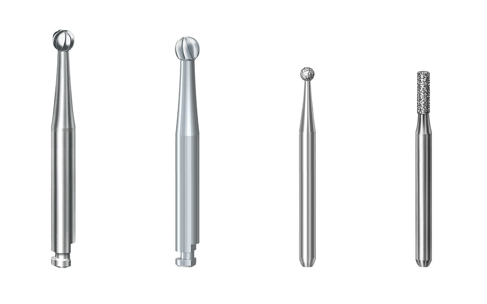
We were one of the first manufacturers to produce tools and instruments made of tungsten carbide. This material offers our customers an outstanding cutting performance and durability. In 1958, we added diamond instruments to our portfolio. The success of our innovations is based on the proximity to our customers and our technical know-how.
Brasseler Campus
Our company kept growing and needed more space. With his decision to erect the first company building at Trophagener Weg, Lemgo, Peter Brasseler confirmed his commitment to the local region. The highly developed local economy and scientific centers make our region the "powerhouse" of North Rhine-Westphalia. Based on long-term space and architectural planning, the Brasseler campus will have grown to xy buildings and an area of xy ym by 2024. Additional land is available as a reserve.
Internationalization
In order to be even closer to customers outside Germany, Peter Brasseler Jr. founded "Brasseler USA", the first international subsidiary, in 1975. In the next few decades, the following agencies in Europe were established:
Komet USA has been successful on the American continent since 2007. As a global player, Brasseler distributes products for dentistry in 100 countries throughout the world under the brand name Komet.
Root canal treatment (endodontics)
We succeeded in entering the market for endodontic treatments with a root post, our first non-rotary product that actually remains in the body. Since 2012, our Dental business unit has been placing special focus on endodontics. By presenting a multitude of product innovations, Komet has gained recognition in the professional world over the years. Komet’s comprehensive product range comprises the entire treatment process including special power units, thus offering the endodontist perfect tools and conditions for successful treatments.
Komet Medical
Under the brand name Komet Medical, we develop, produce and distribute precision tools for use in surgical power units. Since 2009, we have also been manufacturing saw blades for use in hip and knee surgery as well as in trauma surgery to complement our existing range of tungsten carbide, steel and diamond instruments. We are now one of the largest manufacturers of medical saw blades worldwide. As a supplier and development partner, international MedTech companies count among our long-standing customers. Many international enterprises view us as the "Saw Blades Competence Center", and as such, we are the first point of contact for their Development departments. Komet Medical covers the entire value chain for all product groups end-to-end, from development, regulatory affairs, production, sterile packaging to logistics.
Growth – driven by innovations
In this decade, the share of the global annual sales generated by innovations increased to 40 %. The success of our inventions is jointly owed to our customers and partners and our own development specialists. The growth enabled and demanded investments at the Lemgo site. With 5 new buildings, the campus grew disproportionately. The number of employees increased to 800.
Social responsibility
A fire-fighting vehicle of Lemgo’s Voluntary Fire Department has been stationed at our premises. Some of our employees are volunteer firefighters, and in the event of an emergency, they jump into the vehicle and arrive at the scene in record time. This is an important contribution to ensure that Lemgo’s fire department remains a voluntary organization. The Old Hanseatic town of Lemgo honored our commitment with an entry in the town’s Golden Book. We are the first company to be honored in this way. This and other projects, e.g. sponsoring the local sports club TBV Lemgo, reflect our commitment to the region and our assumption of social responsibility as one of the largest employers.
S-Diamonds
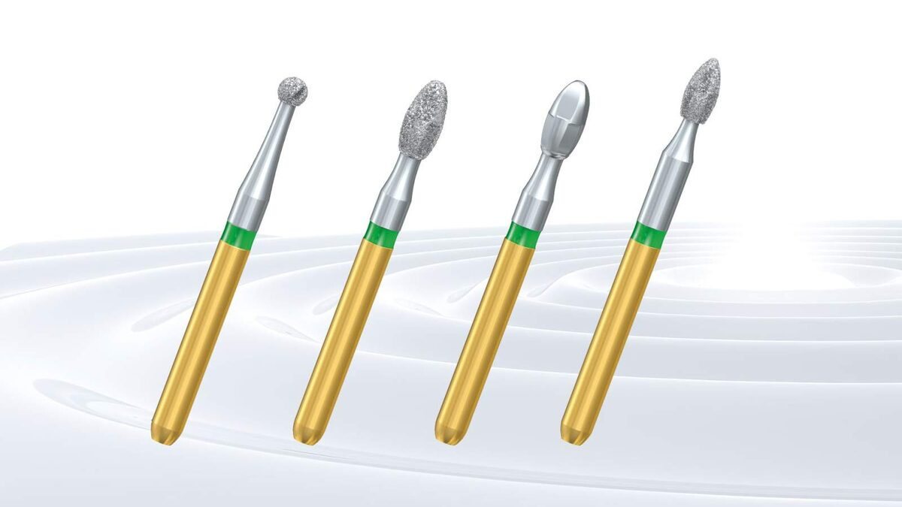
In 2001, Komet developed a time-saving solution for crown preparation: The S-diamonds facilitate gentle, yet efficient treatments. Thanks to the unique combination of a structured blank and coarse diamond grit, they remove substance effectively.
World premiere – ceramic instruments
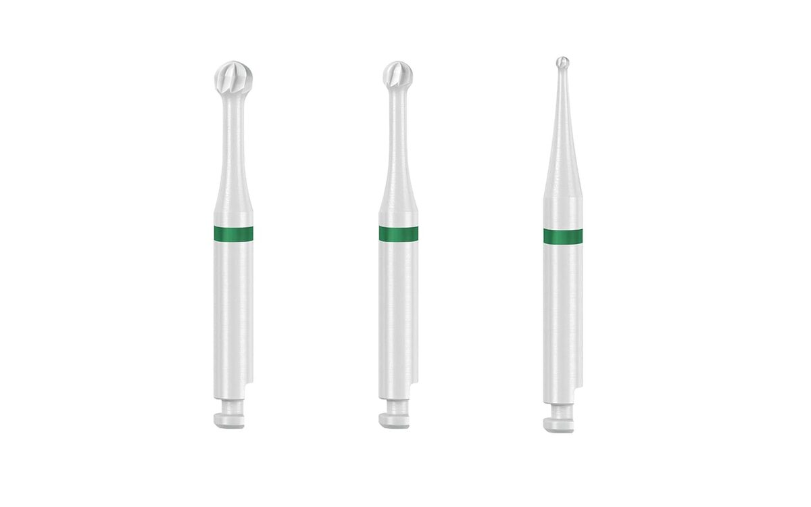
We were the first manufacturer to launch a ceramic bur. This cutting properties of this material differ from those of metal. It provides important feedback to the practitioner during use. Like this, we can jointly achieve an optimized result for the patient. Thanks to our know-how, we are the leading international manufacturer of ceramic instruments in dentistry.
Q-Finishers
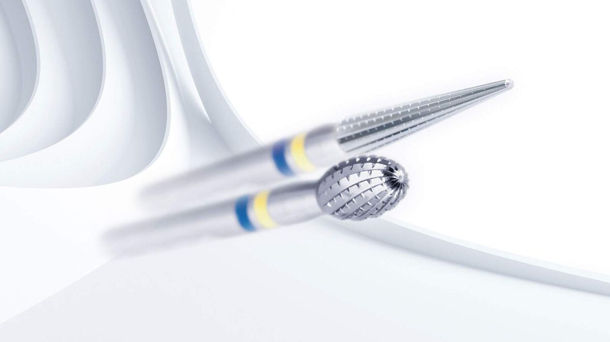
Provided with an innovative cross-cut toothing, Komet’s Q-Finisher revolutionized work on composite fillings in 2003. While traditional treatments required three steps, finishing with Q-Finishers can be done in just two, thus saving costs and time during use.
DentinPost
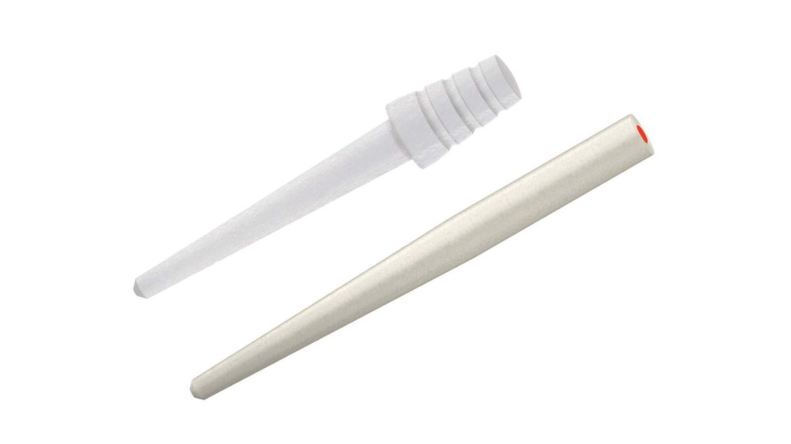
Since 2004, patients have been able to opt for a particularly esthetic tooth restoration. Made of glass fiber-reinforced composite, Komet's tooth-colored DentinPost not only provides an esthetically pleasing result, but also a firm hold.
Universal toothing cutter made by Brasseler
The first "Universal toothing cutter made by Brasseler" was developed by our very own engineers and completed in the company’s own machine shop. This is a prime example of how we optimize manufacturing processes in-house. Our experts and the experience gained over many decades clearly paid off. In 2018, the second, optimized version of the "Universal toothing cutter" was created. Our expert knowledge of the processes and manufacturing equipment forms the backbone for the digitalization of our production and the aspired autonomous manufacturing.
CAD/CAM Alliance (Computer Aided Design and Manufacturing)
In 2011, we introduced digital workflow in production – a significant investment driven by our great technological competence and our ambition to break new ground. Like this, the production can be simulated to establish feasibility, and the products can be manufactured faster. We play a pioneering role in the use of this technology on grinding machines. In the market we are viewed as an international reference.
Breakdown into Business Units
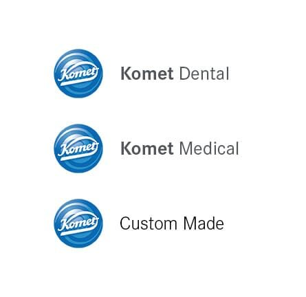
An organizational development process led to the foundation of our Dental, Medical and Custom Made business units. The bundling of competencies from our development, quality control, marketing and sales departments enables the organization to focus on the individual customer groups and results in different business models. Komet Medical remains the partner of our customers from the human medicine sector, whereas leading companies from the dental implantology field will be supplied by us as developer and contract manufacturer under the brand Komet Custom Made.
We could see our long-term planning paying off and we have been achieving sustainable, organic growth in all business units ever since.
Strategy and digitization
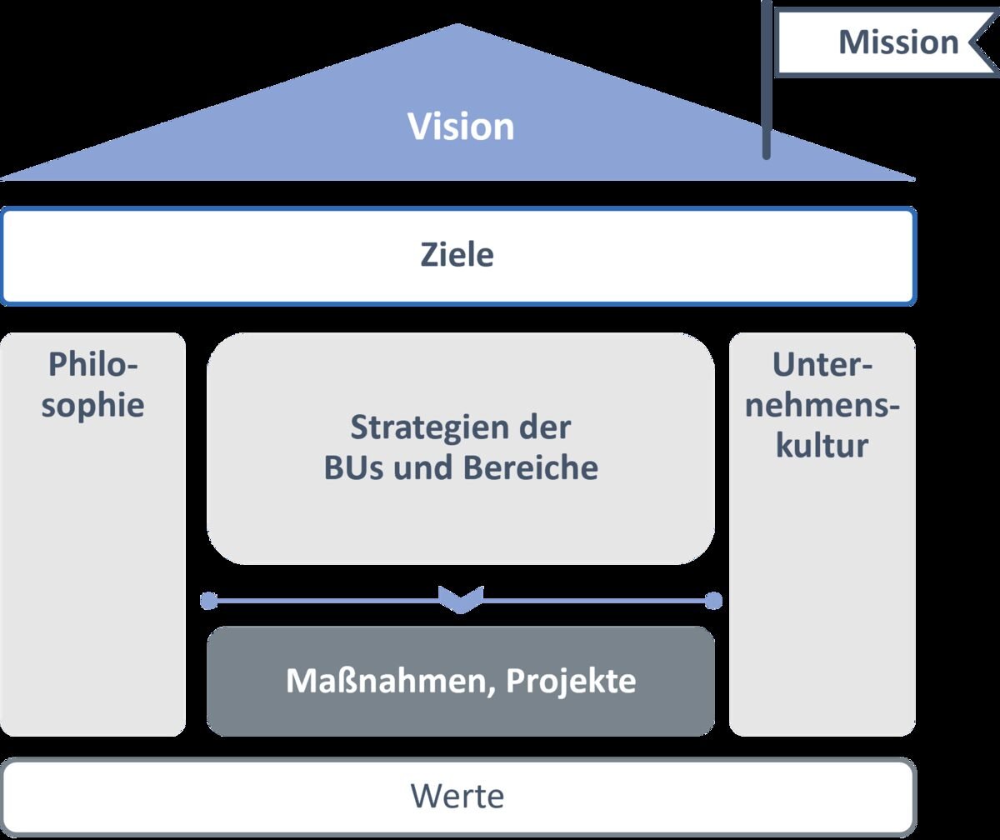
In 2018, we realigned our value creation processes to suit customer requirements. As part of a company-wide training campaign, managers adapted their roles in line with the lean philosophy. Employees are also involved in this process at an early stage. Digital solutions support the processes, and the new strategy is having a positive impact on space and architectural planning. Our common goal is to establish value-added chains that set the benchmark worldwide.
Certification – Medical Device Regulation (MDR)
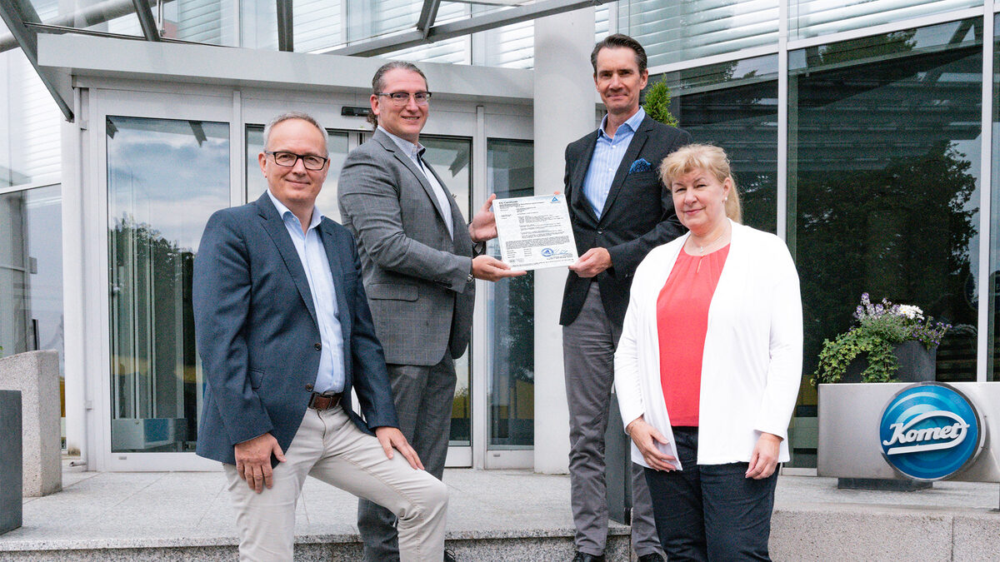
We are one of the first 200 companies worldwide to be certified in accordance with the new European Medical Device Regulation (MDR). In an elaborate project that took us several years to complete, we revised the corporate processes as well as the technical documentation in order to comply with the considerably more stringent requirements of the European legislation. Having completed this task at an early stage gives us a head start over many competitors and is particularly appreciated by our customers. This is how close, successful and long-term partnerships are formed.
Dentything – innovation for dental practices
In 2022, we launched the first Komet innovation that is not a medical device but optimizes the processes in dental practices. With the first digital merchandise management system for dental practices, we expanded the service offered to our customers in the German market. The Dentything was designed entirely at our own works and is also assembled and equipped here at the company. We were awarded the "TOP 100 Innovator" prize for our controlled innovation processes and, among other things, the Dentything.
Autonomous production – TOP 100 Award
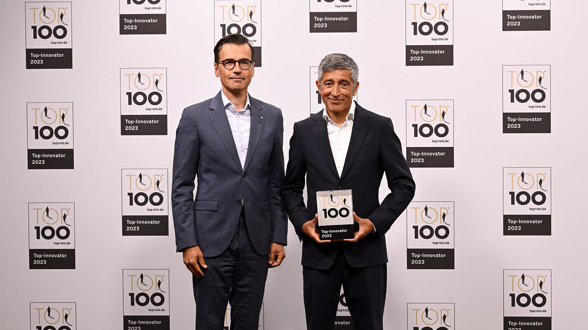
Industry 4.0 has been on the strategic agenda since 2018. It took a large number of milestones until autonomous production in the grinding of the toothing became possible in the production of dental instruments made of tungsten carbide. Thanks to condition monitoring, prediction methods as well as detection of wear and anomalies, machines can run for longer periods without external intervention. As a result, production runs 24 hours a day, six days a week. Throughput times and quality rates improve noticeably. As a result, we can largely dispense with stressful night shifts in this area. And on Saturdays, the machines continue working while their human “colleagues” enjoy their weekend. For our digitization strategy and innovative strength, we have been awarded the "TOP 100 Innovator" by the scientific jury for the second time in a row.